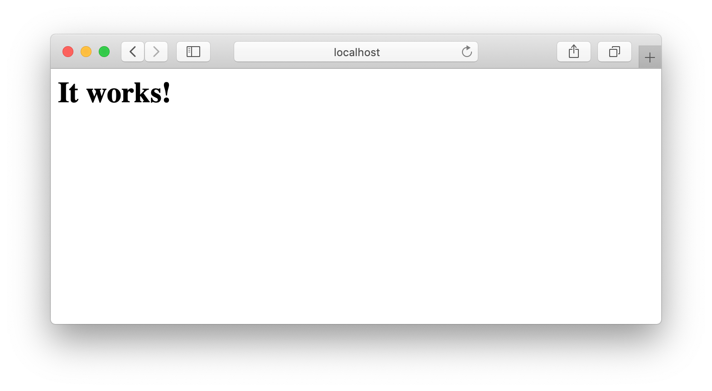
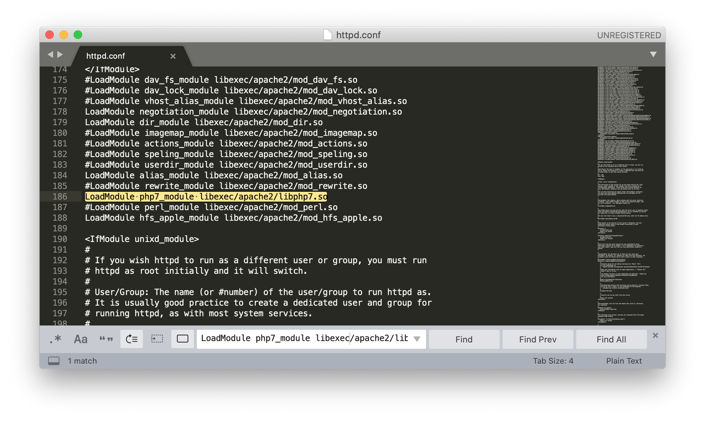

Локальный сервер на macOS#
Мы тут поднимаем и настраиваем локальный сервер для работы с PHP и MySQL. Просьба MERNутым стразу проходить мимо (с уважением... к PHP... да и вообще ко всем технологиям и тем кто их использует)
Есть два варианта поднять локальный сервер на mac:
- Установить сторонний готовый серверный пакет
- Использовать встроенный сервер
Apache
Первый вариант в топку - смысл ставить что-то стороннее, если есть встроенное в систему. О втором варианте ниже.
Запуск Apache#
-
Выполни в терминале команду:
sudo apachectl start # не забудь ввести пароль - тот что для входа при старте компа. # юзаешь отпечаток пальца - придется вспомнить парольне знаешь что такое
sudoилиapachectl? Не тупи - иди гугли! Разберешься - вертай сюда назад. Не знаешь что такоеstart- купи словарь -
Введи пароль, который юзаешь для входа в систему. Когда будешь вводить в консоли ничего не измениться, как будто строка пустая и каретка не двигается - это норма при вводе пароля! Ввел - не забудь Enter жмакнуть.
-
Проверь, что сервак стартанул. Иди в браузер, вводи url
http://localhost. Должно быть так: Файлы localhost'а лежат в директории
/Library/WebServer/Documents.
Теперь сервер должен стартовать сам при запуске компа - проверь это.
Установка PHP#
Дежавю. PHP уже есть в системе. Включи его поддержку, отредактировав файл конфигурации Apache /etc/apache2/httpd.conf:
-
Откройте данный файл любым доступным способом в редакторе кода. Но в терминале удобнее:
sudo subl /etc/apache2/httpd.confЯ не умею пользоваться консольными редакторами (
nano/vim) и настроил символьную ссылку для открытия файлов в Sublime Text 3 из консоли, отсюда в команде выше видишьsubl. Вот тут хороший человек пишет как это сделать. -
Раскомментируй строку, отвечающую за загрузку модуля php7_module
LoadModule php7_module libexec/apache2/libphp7.so, удалив перед строкой символ #:  -
Так же раскомментируй строку:
LoadModule rewrite_module libexec/apache2/mod_rewrite.so -
Сохрани файл.
-
Конфигурация сервака изменилась. Что бы изменения применились, перезапусти сервак:
sudo apachectl restart
Решение проблем с правами доступа#
В macOS куча системных/технических пользователей/ролей о которых обычный юзер не знает - это сделано для безопасности системы. Например, сервер Apache будет вносить изменения на диске от имени пользователя _www. Но у него нет прав на запись в папке /Users/your-user-name. Нам такой доступ потребуется. Для этого:
-
Все в том же файле
/etc/apache2/httpd.confнайди и закомментируй строки поставив#перед ними:# User _www # Group _www -
Сразу под ними напиши еще две строки:
User username # Где username - имя твоего пользователя в системе Group staff -
Сохрани файл.
-
Перезапусти сервак:
sudo apachectl restart
Теперь апач будет вносить изменения от твоего имени. И не нужно будет возиться с правами доступа к директориям.
Настройка виртуальных хостов#
Редактируем httpd.conf#
-
Открой файл конфигурации Apache
/etc/apache2/httpd.confв редакторе, например так:sudo subl /etc/apache2/httpd.conf -
Найди строку
#Include /private/etc/apache2/extra/httpd-vhosts.confи добавь под ней новую строку:Include /private/etc/apache2/vhosts/*.conf -
Созрани изменения и закрой файл.
Ты добавил директиву - Apache будет искать настройки для локально разрабатываемых сайтов в файлах с расширением .conf из директории /private/etc/apache2/vhosts. Для каждого сайта - свой файл *.conf
Настройка виртуального хоста по умолчанию#
-
Создай директорию
/private/etc/apache2/vhosts- ты добавил путь до нее выше, но физически такой папки нет. Исправь это:sudo mkdir /private/etc/apache2/vhosts -
Перейди в эту директорию:
cd /private/etc/apache2/vhosts/ -
Создай файл
_default.conf:sudo touch _default.conf -
Открой этот файл в редакторе:
sudo subl _default.conf -
Пропиши в нем конфигурацию по умолчанию:
<VirtualHost *:80> DocumentRoot "/Library/WebServer/Documents" </VirtualHost> -
Созрани и закрой файл.
-
Перезапусти сервак:
sudo apachectl restart -
Открой в браузере url
http://localhost. Если нет ошибок - все идет как надо.
Настройка хоста для сайта#
Инструкцию из этого раздела придется выполнять каждый раз при старте разработки бекенда для очередного нового сайта.
Договоримся, что директории для локально разрабатываемых сайтов будем размещать в директории sites домашней папки (твоя папка пользователя) - Users/your-user-name/sites
Для примера создай сайт, который ты будешь открывать по домену test-site.local:
-
Перейди в папку
/private/etc/apache2/vhosts/:cd /private/etc/apache2/vhosts/ -
Создай файл
test-site.local.conf:sudo touch test-site.local.conf -
Открой его в редакторе:
sudo subl test-site.local.conf -
Введи в файле:
<VirtualHost *:80> DocumentRoot "/Users/your-user-folder/sites/test-site" ServerName test-site.local ErrorLog "/private/var/log/apache2/test-site.local-error_log" CustomLog "/private/var/log/apache2/test-site.local-access_log" common <Directory "/Users/your-user-folder/sites/test-site"> AllowOverride All Require all granted </Directory> </VirtualHost> # где your-user-folder - имя папки твоего пользователя # где test-site - название сайта